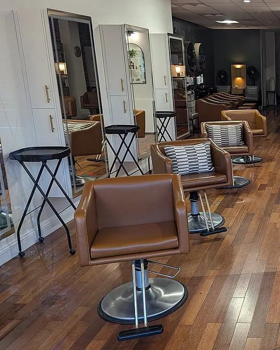
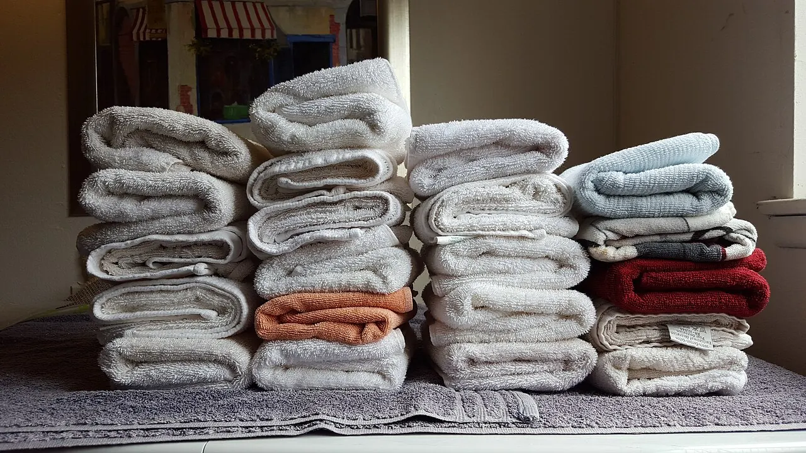
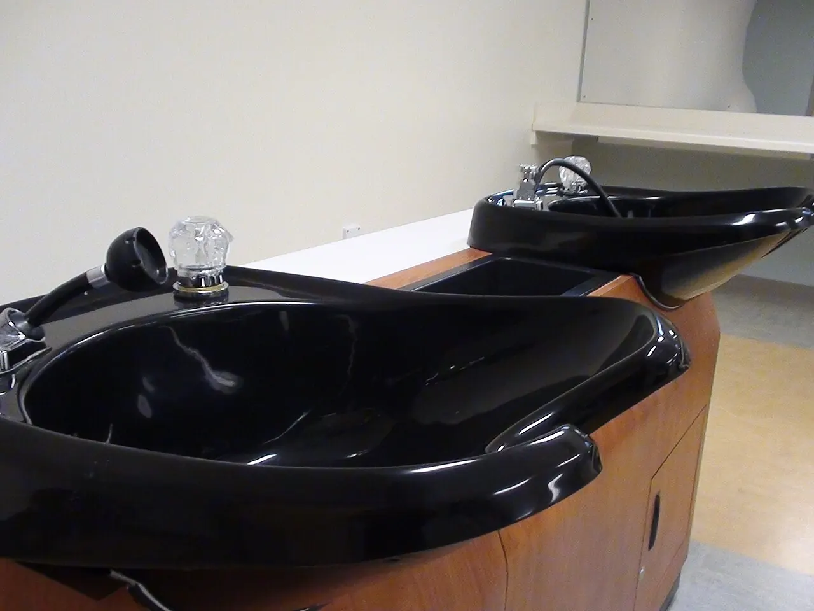
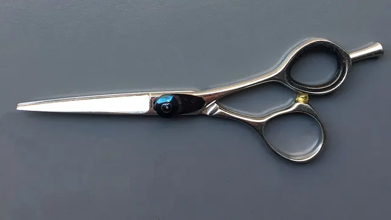
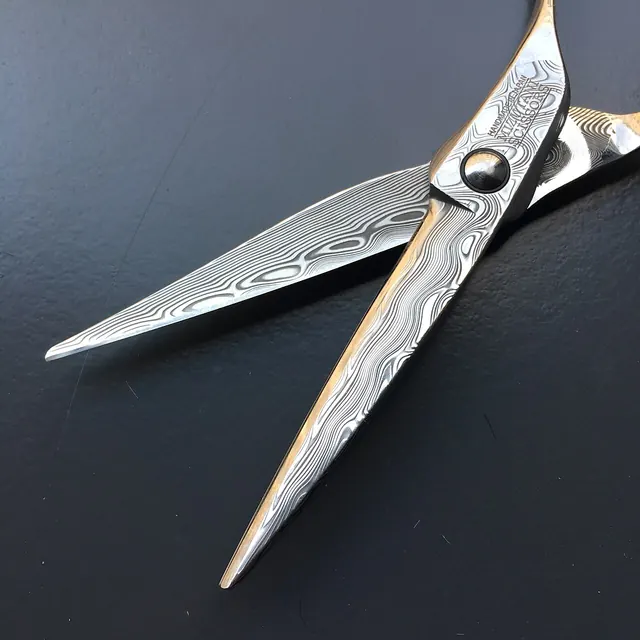
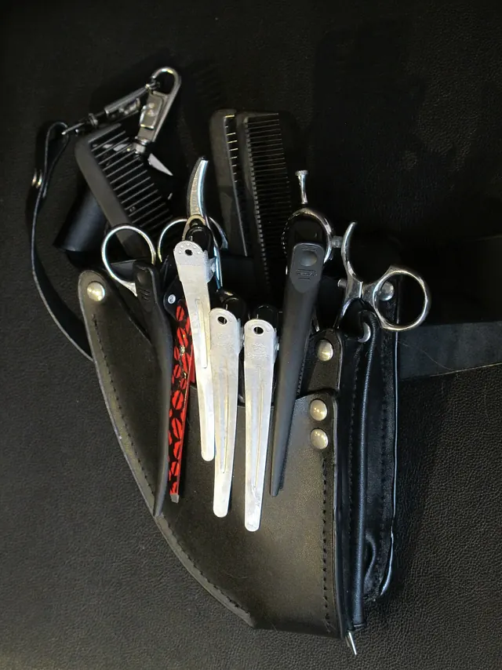
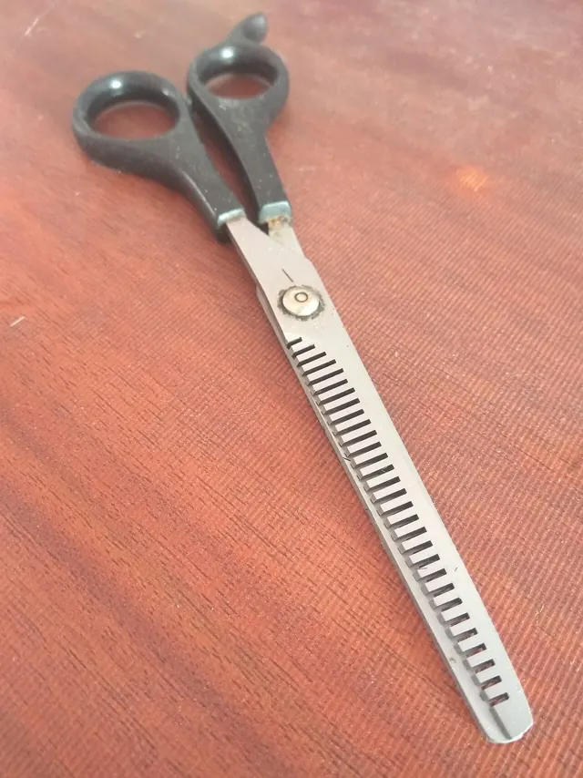
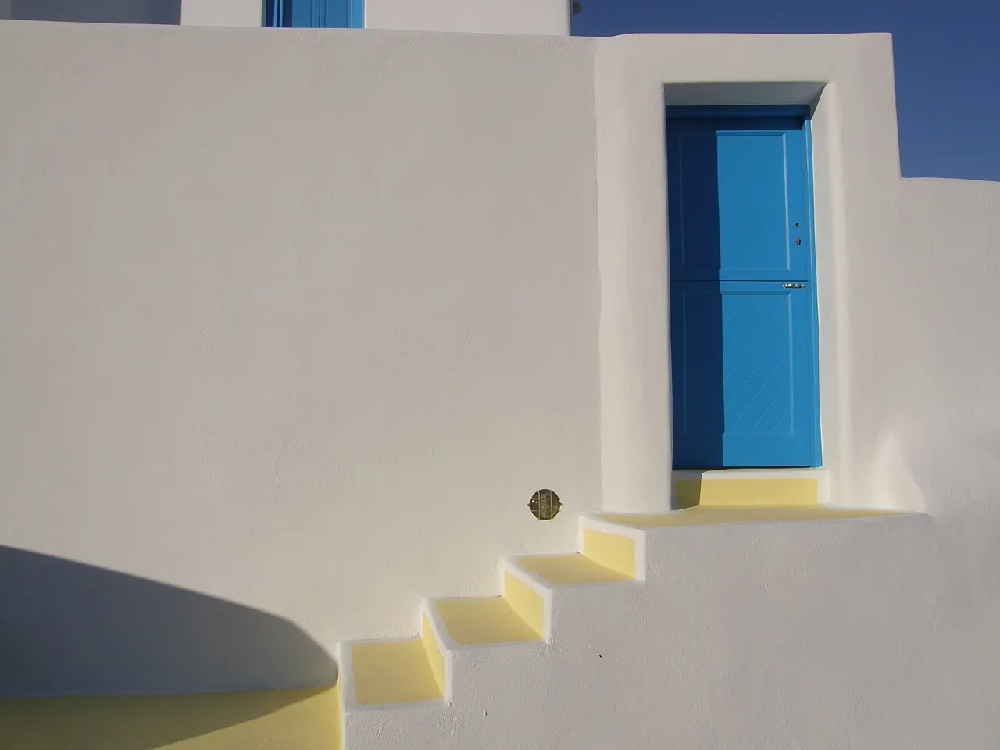

ひと組ずつ、静かに。髪と頭皮のサロン
朝凪駅から徒歩6分。カットとヘッドスパを、最初から最後までひとりの担当が行います。完全予約制です。
LINEで予約する
サロンについて
席は3つありますが、同じ時間にお迎えするのはひと組だけです。カウンセリングから仕上げまで、担当の白石がひとりで行い、途中で人が替わることはありません。
カットは60分、ヘッドスパは60分か90分。次の方と時間が重ならないように予約を取っているので、終わりの時刻を気にせず過ごせます。話しかけてほしくない日は、最初にそう伝えてください。


ヘッドスパ
頭皮の汚れを落としてから、手で時間をかけてほぐします。機械は使いません。乾かすところまで含めた時間です。
- 10分カウンセリング。頭皮の状態を見て、使う薬剤を決めます
- 10分炭酸泉で、毛穴の汚れを浮かせて洗います
- 30〜60分首、肩、頭皮を手でほぐします
- 10分乾かして、整えて終わりです
60分 8,800円 ／ 90分 12,100円
料金
ヘッドスパ
- ヘッドスパ 60分
- 60分
- 8,800円
- ヘッドスパ 90分
- 90分
- 12,100円
カット
- カット
- 60分
- 6,600円
- カットとヘッドスパ 60分
- 120分
- 14,300円
- 前髪だけ
- 15分
- 1,100円
カラーとトリートメント
- カラー（根元だけ）
- 90分
- 7,700円
- カラー（全体）
- 120分
- 9,900円から
- トリートメント
- +20分
- 4,400円
表示は税込みです。初めての方はカウンセリングのため、時間が15分長くなります（料金は同じです）。お支払いは現金、クレジットカード、QRコード決済が使えます。



担当

白石 澪しらいし みお
美容師免許、ヘッドスパの民間資格
市内の美容室で12年働いたあと、2024年にこのサロンを開きました。くせ毛のカットと、乾かすだけでまとまる長さの相談が得意です。
「次に来るまでの1か月、家でどう扱うか」まで話してからお帰りいただくようにしています。
ご予約
完全予約制です。LINEでご希望の日時とメニューを送ってください。営業時間内に順番にお返事します。Webの予約ページでは、空いている時間をそのまま押さえられます。
当日の予約は、空きがあれば受けています。LINEでお問い合わせください。
見本のため、ボタンはどこにもつながっていません。
キャンセルと遅刻
- 前日までのキャンセルは無料です
- 当日のキャンセルは、料金の50%をいただきます
- 15分以上遅れる場合は、メニューを短くするか、日を改めます
初めての方へ
髪の悩みや、なりたい長さの写真があれば見せてください。ヘッドスパは、施術の前に食事を軽く済ませておくと楽です。
よくある質問
子ども連れでも大丈夫ですか
はい。ほかのお客様と時間が重ならないので、未就学のお子さまも一緒にどうぞ。ベビーカーは店内に入れられます。
男性も利用できますか
はい。カットもヘッドスパも、料金は同じです。
当日の予約はできますか
空きがあれば受けています。LINEで「今日」とお送りください。
支払い方法は何がありますか
現金、クレジットカード（Visa、Mastercard、JCB、AMEX）、QRコード決済（PayPay）です。
場所
〒000-0000 朝凪市汐見町2-0-0 汐見ハイツ2階
朝凪駅の西口を出て、汐見通りをまっすぐ5分。郵便局の角を左に入って2軒目です。白い壁の外階段を上った先、青い扉が入口です。
| 営業時間 | 10:00〜19:00（最終受付はメニューにより17:00〜18:00） |
|---|---|
| 定休日 | 月曜、第2火曜 |
| 駐車場 | ありません。汐見通りにコインパーキングがあります |
